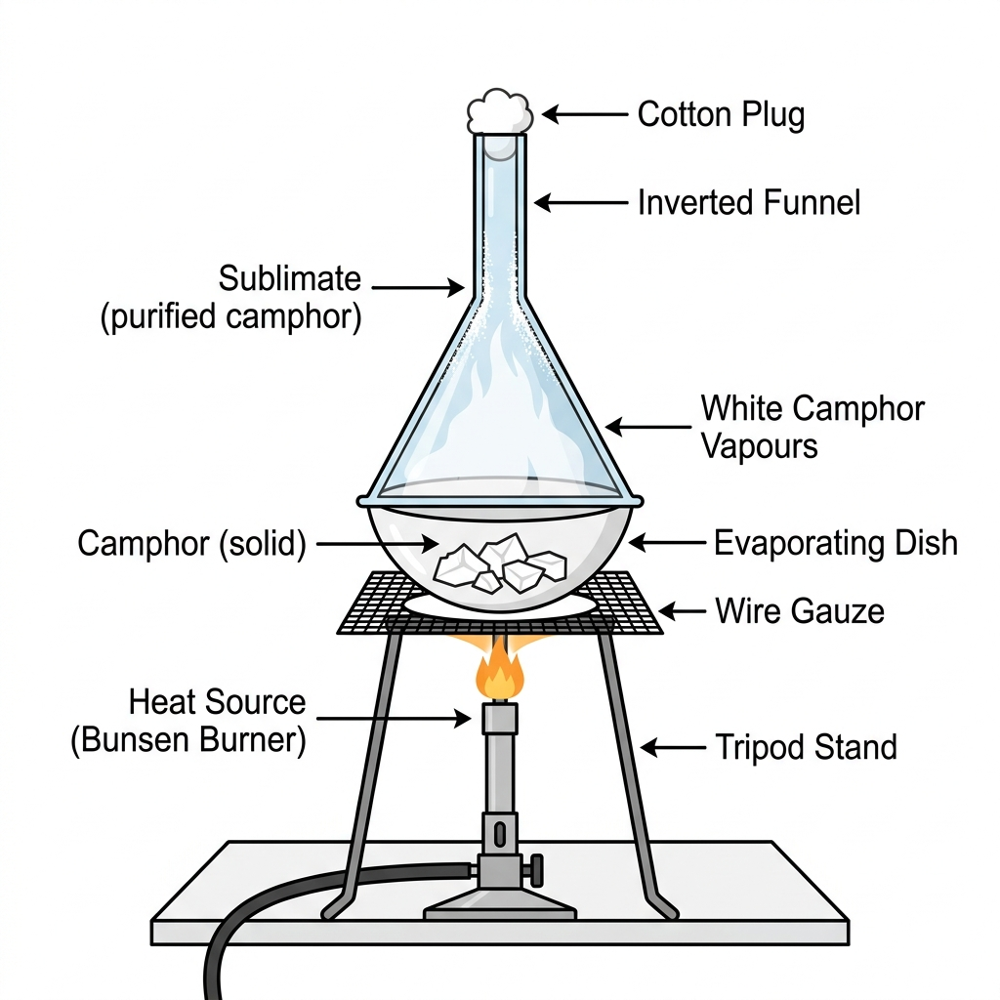
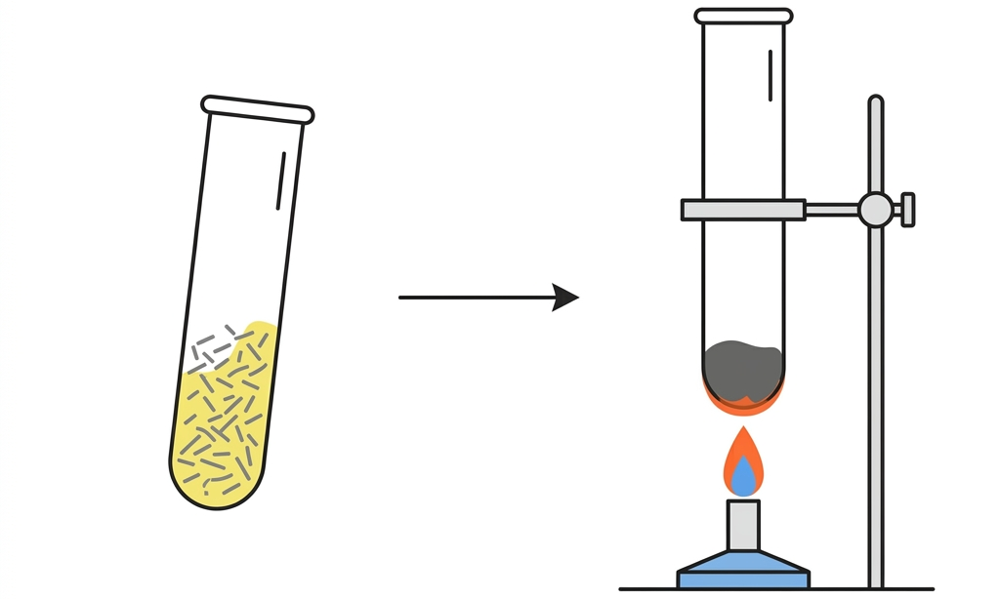
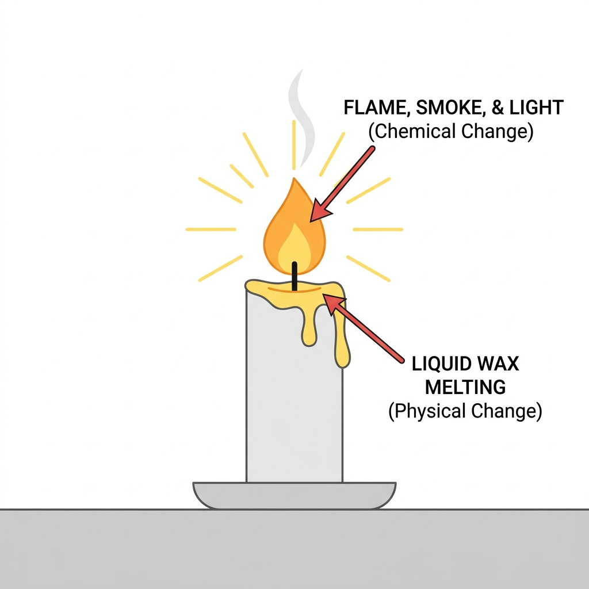

Vardaan Learning Institute
Class 8 Chemistry • Chapter Notes
🌐 vardaanlearning.com
📞 9508841336
2. PHYSICAL AND CHEMICAL CHANGES
1. Introduction to Changes
Change is a universal phenomenon. Almost all substances around us undergo change continuously. Examples include the change of day and night, changing of seasons, growth in plants and animals, cooking food, and burning of fuels.
Classification of Changes
In science, changes can be classified into several opposite pairs based on how they occur:
Fact
- Slow vs. Fast Changes:
Slow: Take hours, days, or years (e.g., Rusting of iron, curd formation, growing into an adult).
Fast: Occur in a short interval (e.g., Bursting of crackers, blinking eyes, lighting a bulb).
- Natural vs. Man-made Changes:
Natural: Occur by themselves in nature (e.g., Earthquakes, seasons changing).
Man-made: Occur due to human efforts (e.g., Cooking food, making steel from iron).
- Periodic vs. Non-periodic Changes:
Periodic: Repeated at regular intervals (e.g., Change of seasons, day and night).
Non-periodic: Occur randomly without regular intervals (e.g., Epidemics, landslides).
- Reversible vs. Irreversible Changes:
Reversible: Can be reversed by changing conditions (e.g., Freezing water to ice and melting it back).
Irreversible: Cannot be brought back to the original state (e.g., Burning paper, cooking food).
2. Physical Changes
Definition
A Physical Change is a change in which a substance changes temporarily in some or all of its physical properties (state, shape, size, appearance), but not in its chemical composition. No new substance is formed.
Characteristics of a Physical Change:
- No new substance is formed: The original chemical makeup remains exactly the same.
- Temporary and Reversible: Mostly, the substance returns to its original state on changing the conditions (e.g., melting ice). Note: Some physical changes like tearing paper or breaking glass are irreversible, but remain physical changes because no new substance is made.
- No change in mass: The mass of the substance remains identical before and after the physical change.
- No net gain or loss of energy: Heat absorbed during a state change (like boiling) is exactly released when the state reverses (like condensation).
Common Examples:

Formation of dew, sublimation of camphor or iodine, melting of wax/ice, glowing of an electric bulb, and dissolution of sugar in water.
3. Chemical Changes
Definition
A Chemical Change is a permanent change in which the original substance gives rise to one or more new substances with entirely different chemical compositions and physical properties.
Characteristics of a Chemical Change:

- New substances are formed: For example, heating iron (Fe) and sulphur (S) creates a brand new grey-black solid called Iron Sulphide (FeS). Iron Sulphide is not attracted by magnets, unlike the original iron.
- Permanent and Irreversible: You cannot easily get the original reactants back by simple physical methods (e.g., ash cannot turn back into paper).
- Change in mass of the original substance: While the Law of Conservation of Mass holds true for the total reaction, the mass of individual solid components can change. For example, burning Magnesium (Mg) in air adds oxygen to form Magnesium Oxide (MgO), making the final solid heavier than the initial solid.
- Exchange of energy takes place: Energy in the form of heat or light is either released (Exothermic Reaction, like burning wood) or absorbed (Endothermic Reaction, like plants absorbing sunlight for photosynthesis).
Common Examples: Cooking of rice, digestion of food, rusting of iron, rotting of eggs, burning of fuels, and curdling of milk.
4. Simultaneous Physical and Chemical Changes
In some cases, physical and chemical changes can occur at the exact same time within the same object.
Important
Burning of a Candle:

This is the classic example of simultaneous physical and chemical change.
- Physical Change: The heat melts the solid wax into liquid wax. Some of this molten wax drops down and solidifies again upon cooling. No new substance is formed here; it is just a change of state.
- Chemical Change: The molten wax travels up the wick and burns to produce a flame. This burning process creates new substances: Carbon dioxide (CO₂) and Water vapour (H₂O), along with the release of heat and light energy. This cannot be reversed.
5. Key Differences: Physical vs. Chemical Changes
| Parameter |
Physical Change |
Chemical Change |
| New Substance |
No new substance is formed. Composition remains the same. |
New substance(s) with entirely different properties are formed. |
| Nature of Change |
Temporary and usually reversible. |
Permanent and irreversible. |
| Mass Change |
No change in the mass of the substance. |
Change in the mass of the original solid substance (though total mass remains conserved). |
| Energy Exchange |
Usually no net loss or gain of heat/light energy. |
Heat and/or light energy is usually released or absorbed. |
| Recovery |
Original substance can be obtained back by simple physical methods. |
Original substance cannot be obtained back by physical methods. |